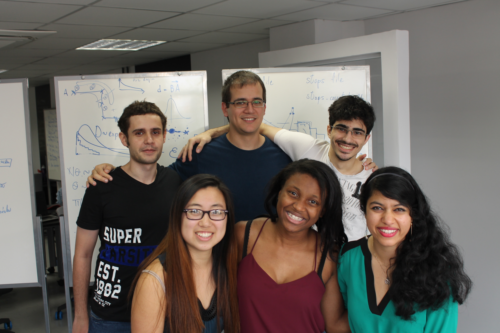
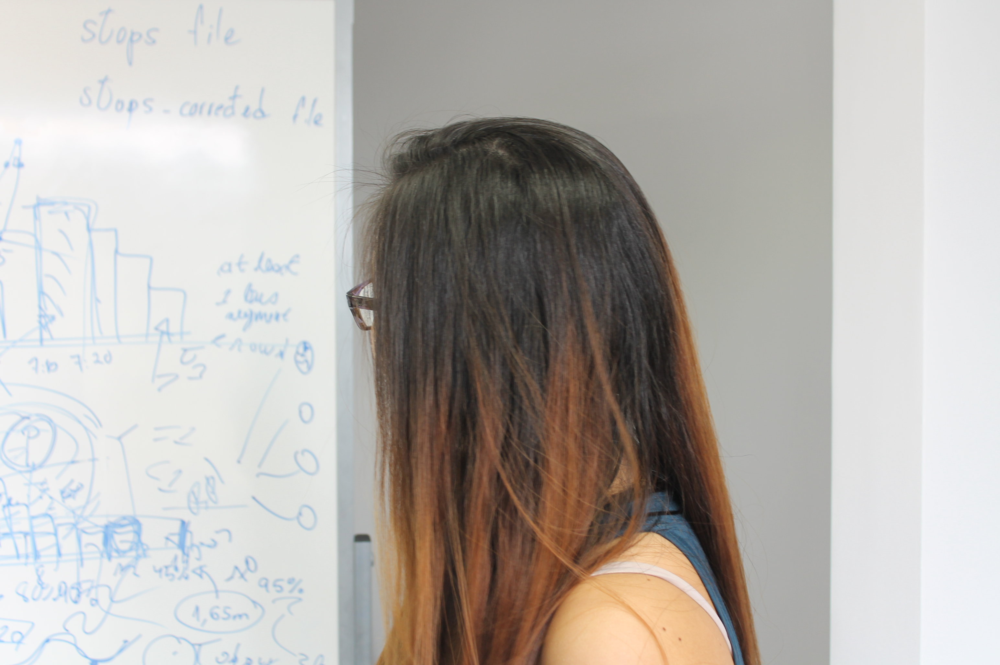

How ColorScoPe Works
Step 1
An urban area is identified to need infrastructural support.
Step 2
The approved aerial image of the area is uploaded to ColorScope.
Step 3
CSP’s unique image processing algorithm measures the road widths.
Step 4
A user controlled custom filter highlights roads of certain widths.
Step 5
Traffic chokepoints, overly narrowed bus lanes, etc can be identified and rectified.
Color São Paulo
Upload an approved map image by using the "Choose File" button below and selecting a width filter:
Our Mission
ColorScope's Mission is to support up-to-date spatial planning through the use of aerial images for the provision of urban services and safety in São Paulo, specifically designed for the local metropolitan level. We are dedicated to providing tools for innovative and effective urban management to address city-users' needs and maintain a vision of integration, connnectedness, and sustainability in the modern world.
The Context
Creating and maintaining effective transportation infrastructure is a major issue for the city of São Paulo where roughly 1 million cars enter the city daily. ColorScope literally highlights the existing status of road infrastructure. It further simplifies a cluttered aerial image and allows for a flexible, in-depth look at the road infrastructure of the city.
Implications on Infrastructure
Filtering the map by street width allows the city to better understand its traffic problems. Widening roads can resolve bottlenecks, provide faster bus transport times, etc. Narrowing roads allows for decreased vehicle speeds, essential for increasing saftey in residential areas and widening sidewalks for increased pedestrian access.
Why road width?
Well-planned cities need to regularly update its public infrastructure to effectively respond to the shifting transportation needs of its citizens. Road widths should reflect traffic flow and space demands.
Current Projects
The Mario Covas Rodoanel Beltway is a metropolitan ring road being built around the city center. When completed, it will provide a way for vehicles to circumnavigate the inner city area and thus reduce traffic congestion.
Future Steps
Future iterations of ColorScope will include broadened areas of analysis including sidewalk widths, parking lots identification, proximity of bus routes to residential and commercial areas, and pedestrian accessibility.
Contact Us
About Us
Meet the Team
 ColorScope was founded in 2016 by Color São Paulo in hopes of utilizing aerial images to support ubran mobility infrastructure. Color São Paulo was formed during the Harvard-MobiLab Experience program and consists of Jessica Zhao, Victor Faria, Zaria Smalls, Monica Mishra, Carlos Elmadjian and Artur André.
 Jessica Zhao is an Applied Mathematics and Economics major at Harvard College. Carlos Elmadjian graduated from IME-USP with a Bachelor's in Computer Science. Monica Mishra studies at Harvard College and is concentrating in Computer Science. Zaria Smalls is currently studying Design Engineering and Social Change. Victor Faria is an undergraduate student at IME-USP studying Computer Science. Artur André is a graduate student in Computer Vision at USP.
Jessica Zhao is an Applied Mathematics and Economics major at Harvard College. Carlos Elmadjian graduated from IME-USP with a Bachelor's in Computer Science. Monica Mishra studies at Harvard College and is concentrating in Computer Science. Zaria Smalls is currently studying Design Engineering and Social Change. Victor Faria is an undergraduate student at IME-USP studying Computer Science. Artur André is a graduate student in Computer Vision at USP.
Acknowledgments
Special thanks to:
Manoel Pereira Neto for being an extraordinary program leader.
SPTrans for the data.
MobiLab for providing our work-space.
Harvard University, IME-USP for the financial support.
Jason Dyett and Vinicius Licks for the program opportunity.
To the amazing speakers who helped us throughout the program.